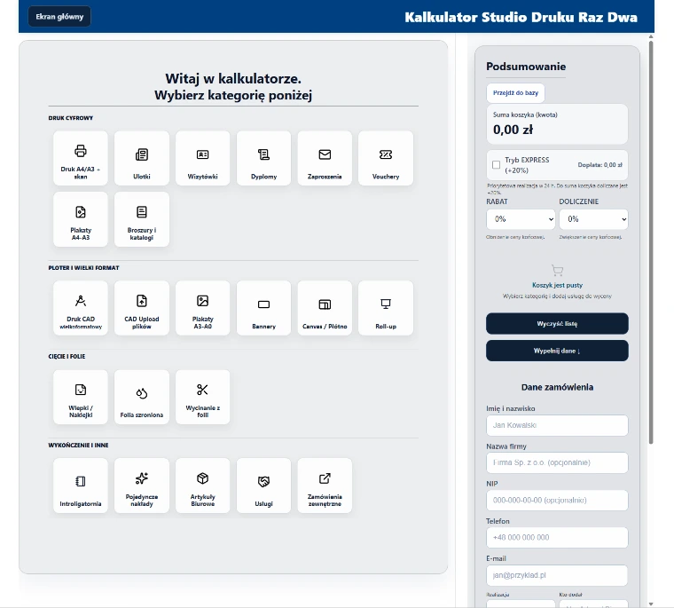
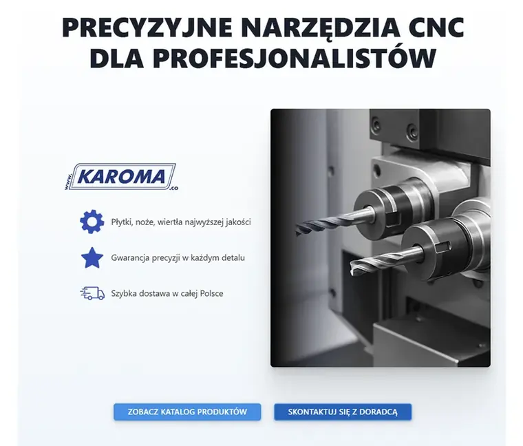

Uporządkuj procesy, odzyskaj czas.
DELIVERY · AUTOMATYZACJA PROCESÓW · WDROŻENIA CYFROWE
Powtarzasz te same czynności, choć dawno mogłyby dziać się same? Buduję rozwiązanie, które oddaje Ci ten czas — bez chaosu i ręcznej roboty.
DELIVERY · AUTOMATYZACJA PROCESÓW · WDROŻENIA CYFROWE
Powtarzasz te same czynności, choć dawno mogłyby dziać się same? Buduję rozwiązanie, które oddaje Ci ten czas — bez chaosu i ręcznej roboty.

Aplikacja do wyceny i zamówień dla drukarni. Wycena z ok. 60 do ok. 5 minut.

Panel w Illustratorze, który sprawdza plik przed drukiem. Kontrola z 5–20 min do ok. 1 min.

Sklep internetowy i identyfikacja marki zbudowane od zera — spójna komunikacja wizualna i uruchomiona sprzedaż online.
Trzy rzeczy, które robię tak, żeby pasowały do Twojego procesu — nie do gotowego pakietu z cennika.

Dla firm, które chcą uporządkować ofertę i zamienić stronę w czytelne narzędzie sprzedaży.
Dla zespołów, które tracą czas na ręczne działania, przeklejanie danych i powtarzalne zadania.

Dla firm, które potrzebują jednego partnera do analizy, uporządkowania i wdrożenia zmian.
Od zrozumienia procesu do gotowego rozwiązania jasno, etapami i bez chaosu.
Rozpoznaję realny problem i ustalam priorytety: co uprościć, przyspieszyć albo zautomatyzować.
Projektuję rozwiązanie dopasowane do firmy i składam całość w spójny produkt.
Testuję, wdrażam i przekazuję gotowe narzędzie z instrukcją — żeby dało się działać samodzielnie od pierwszego dnia.
Projektuję i wdrażam narzędzia, które zdejmują z zespołu ręczną robotę: automatyzacje, aplikacje i strony. Prowadzę projekt sam od analizy do wdrożenia, więc zakres, termin i efekt mają jednego właściciela.
Nie ganiasz kilku wykonawców i nie sprawdzasz, kto za co odpowiada. Piszesz do mnie i sprawa idzie dalej.
Ustalamy priorytety na początku i przechodzimy do działania. Wiesz, co dzieje się teraz i co będzie następne.
Dostajesz działające narzędzie z instrukcją, dopasowane do tego, jak naprawdę pracuje Twój zespół.
Tak, jeśli chcesz uporządkować proces, uprościć stronę, wdrożyć automatyzację albo połączyć te obszary w jeden spójny system działania. Najczęściej współpracuję z firmami, które czują, że da się pracować szybciej, prościej i z mniejszym chaosem, ale brakuje im czasu albo partnera, który przeprowadzi to od początku do wdrożenia.
Zaczynamy od krótkiej rozmowy i poznania Twojej sytuacji: co dziś nie działa, co chcesz uporządkować i jaki efekt chcesz osiągnąć. Na tej podstawie proponuję najlepszy kierunek działania, zakres współpracy i kolejne kroki.
Mniejsze automatyzacje zamykam zwykle w kilka tygodni, większe projekty trwają kilka miesięcy. Harmonogram z etapami ustalamy po analizie, więc od początku wiesz, kiedy zobaczysz pierwszy efekt.
Każdy projekt wyceniam po krótkiej analizie zakresu. Wycenę dostajesz z podziałem na etapy, żeby było jasne, za co płacisz i kiedy zobaczysz efekt. Orientacyjny próg dla produktów cyfrowych znajdziesz na stronie usług.
Odpowiadam w ciągu 24 godzin. Sprawdzę, co warto uporządkować i zaproponuję najlepszy kierunek działania.